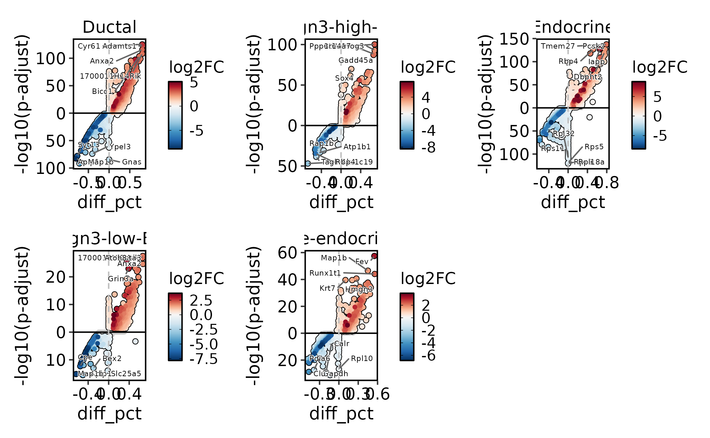
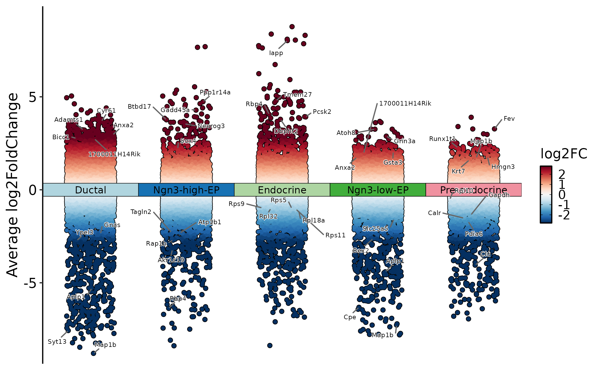
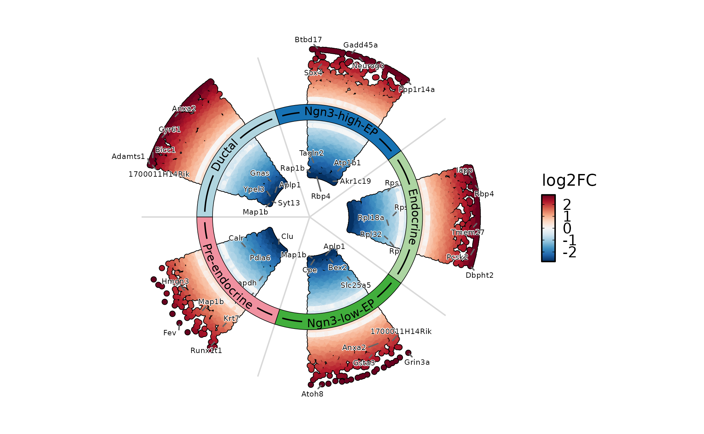
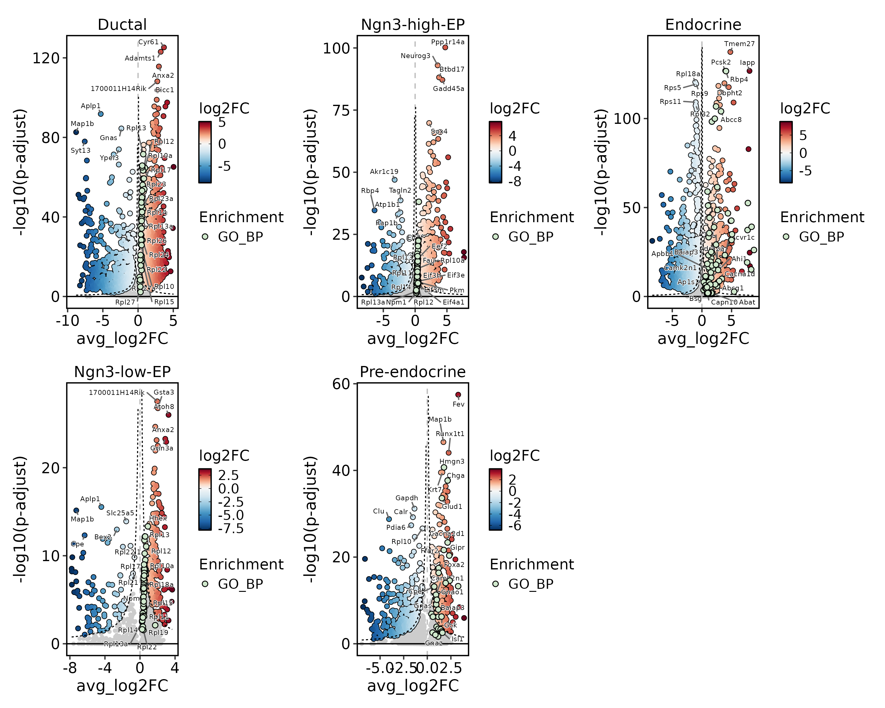
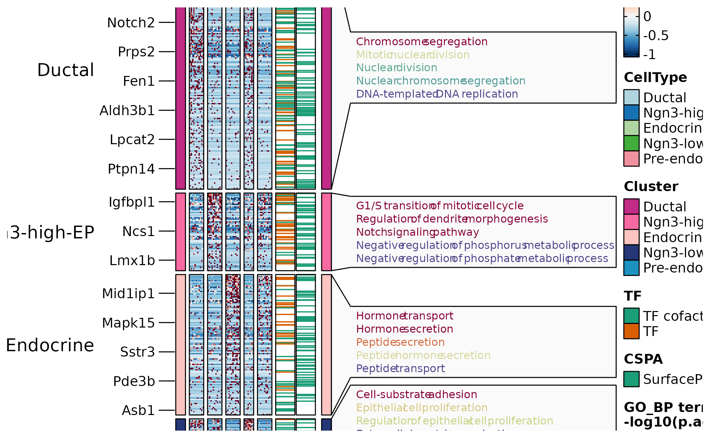
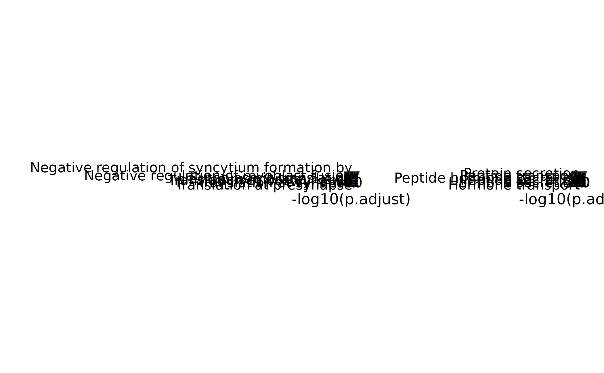
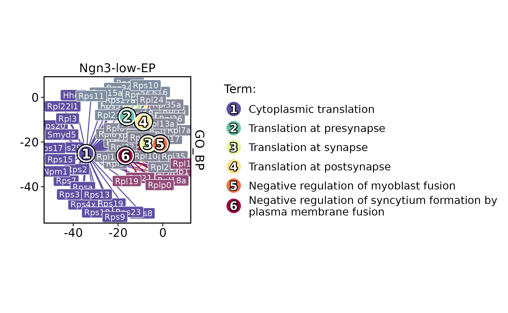
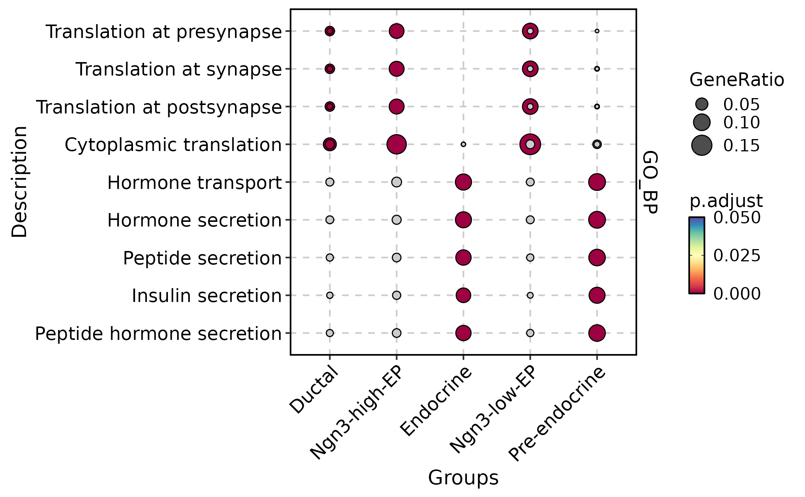

Differential expression and enrichment workflow
Source:vignettes/differential-enrichment-workflow.Rmd
differential-enrichment-workflow.RmdThis article shows how to organize differential expression, marker
visualization, and pathway enrichment in scop. The main
distinction is between testing genes, summarizing gene sets, and
interpreting enriched biological terms.
Use this workflow after cell identities and major covariates are stable. Differential expression is gene-level evidence. Enrichment is a summary of a gene list or ranked statistic against a named database. Keep those two evidence layers separate in the text of a report.
Prepare the Object
library(scop)
#> ⬢ . ⬡ ⬢ .
#> _____ _________ ____
#> / ___// ___/ __ ./ __ .
#> (__ )/ /__/ /_/ / /_/ /
#> /____/ .___/.____/ .___/
#> /_/
#> ⬢ . ⬡ . ⬢
#> ------------------------------------------------------------
#> Version: 0.8.9 (2026-07-20 update)
#> Website: https://mengxu98.github.io/scop/
#>
#> Python environment initialization is disabled
#> To enable it, set: options(scop_env_init = TRUE)
#>
#> The message can be suppressed by:
#> suppressPackageStartupMessages(library(scop))
#> or options(log_message.verbose = FALSE)
#> ------------------------------------------------------------
data(pancreas_sub)
pancreas_sub <- standard_scop(pancreas_sub, verbose = FALSE)
#> ℹ [2026-07-28 03:37:57] Skip `log1p()` because `layer = data` is not "counts"
table(pancreas_sub$CellType)
#>
#> Ductal Endocrine Ngn3-high-EP Ngn3-low-EP Pre-endocrine
#> 253 355 169 67 156Run Differential Expression
RunDEtest() writes differential-expression tables under
srt@tools. The default single-cell marker workflow is
appropriate for exploratory marker finding. Use sample-aware or
pseudobulk methods when biological replicates are part of the
question.
pancreas_sub <- RunDEtest(
pancreas_sub,
group.by = "CellType",
fc.threshold = 1,
only.pos = FALSE
)
#> ℹ [2026-07-28 03:38:01] Data type is log-normalized
#> ℹ [2026-07-28 03:38:01] Start differential expression test
#> ℹ [2026-07-28 03:38:01] Find all markers(wilcox) among [1] 5 groups...
#> ℹ [2026-07-28 03:38:01] Using 1 core
#> ⠙ [2026-07-28 03:38:01] Running for Ductal [1/5] ■■ 20% | ETA: 0s
#> ✔ [2026-07-28 03:38:01] Completed 5 tasks in 544ms
#>
#> ℹ [2026-07-28 03:38:01] Building results
#> ✔ [2026-07-28 03:38:02] Differential expression test completed
names(pancreas_sub@tools)
#> [1] "DEtest_CellType"
head(pancreas_sub@tools$DEtest_CellType$AllMarkers_wilcox)
#> p_val avg_log2FC pct.1 pct.2 p_val_adj gene group1
#> 1 7.287773e-130 3.679046 0.897 0.096 5.597739e-126 Cyr61 Ductal
#> 2 1.168267e-127 3.217619 0.937 0.118 8.973461e-124 Adamts1 Ductal
#> 3 2.900413e-120 2.956891 0.976 0.173 2.227807e-116 Anxa2 Ductal
#> 4 8.561291e-113 2.733121 0.949 0.147 6.575927e-109 1700011H14Rik Ductal
#> 5 2.559824e-108 2.764483 0.960 0.229 1.966201e-104 Bicc1 Ductal
#> 6 1.495170e-103 2.646007 0.905 0.147 1.148440e-99 Gsta3 Ductal
#> group2 test_group_number
#> 1 others 5
#> 2 others 5
#> 3 others 5
#> 4 others 5
#> 5 others 5
#> 6 others 5
#> test_group
#> 1 Ductal;Ngn3-high-EP;Endocrine;Ngn3-low-EP;Pre-endocrine
#> 2 Ductal;Ngn3-high-EP;Endocrine;Ngn3-low-EP;Pre-endocrine
#> 3 Ductal;Ngn3-high-EP;Endocrine;Ngn3-low-EP;Pre-endocrine
#> 4 Ductal;Ngn3-high-EP;Endocrine;Ngn3-low-EP;Pre-endocrine
#> 5 Ductal;Ngn3-high-EP;Endocrine;Ngn3-low-EP;Pre-endocrine
#> 6 Ductal;Ngn3-high-EP;Endocrine;Ngn3-low-EP;Pre-endocrineKeep the contrast, grouping column, test method, and threshold in the
report. Those choices define the meaning of each marker table. For
FindAllMarkers-style results, group1 names the
group being compared against the remaining cells unless a specific
contrast is stated.
Plot Differential Results
Use volcano, Manhattan, and ring views for different levels of detail. Volcano plots are useful for one group or contrast; Manhattan and ring plots are useful when scanning many groups.
DEtestPlot(
pancreas_sub,
group.by = "CellType",
plot_type = "volcano",
label.size = 2
)
DEtestPlot(
pancreas_sub,
group.by = "CellType",
plot_type = "manhattan",
label.size = 2
)
DEtestPlot(
pancreas_sub,
group.by = "CellType",
plot_type = "ring",
label.size = 2
)
When enrichment results are available, volcano plots can annotate
enriched terms to connect marker genes with pathway-level
interpretation. The enrichment overlay circles genes that belong to
selected enriched terms. The legend title is the analysis layer
(Enrichment), and the legend item is the database, for
example GO_BP.
pancreas_sub <- RunEnrichment(
pancreas_sub,
group.by = "CellType",
db = "GO_BP",
species = "Mus_musculus"
)
#> ℹ [2026-07-28 03:38:22] Start Enrichment analysis
#> ℹ [2026-07-28 03:38:22] Species: "Mus_musculus"
#> ℹ [2026-07-28 03:38:23] Loading cached: GO_BP version: 3.23.0 nterm:14957 created: 2026-07-28 03:29:14
#> ℹ [2026-07-28 03:38:24] Permform enrichment...
#> ℹ [2026-07-28 03:38:26] Using 1 core
#> ⠙ [2026-07-28 03:38:26] Running for 1 [1/5] ■■ 20% | ETA: 2s
#> ⠹ [2026-07-28 03:38:26] Running for 3 [3/5] ■■■■■■ 60% | ETA: 1s
#> ✔ [2026-07-28 03:38:26] Completed 5 tasks in 2.7s
#>
#> ℹ [2026-07-28 03:38:26] Building results
#> ✔ [2026-07-28 03:38:29] Enrichment analysis done
DEtestPlot(
pancreas_sub,
group.by = "CellType",
plot_type = "volcano",
threshold_method = "hyperbolic",
hyperbola_c = 6,
annotate_enrichment = TRUE,
enrich_from = "Enrichment",
enrich_db = "GO_BP",
enrich_top_terms = 3,
enrich_nlabel = 15,
label.size = 2
)
Summarize Markers in Heatmaps
Feature heatmaps are useful after markers have been filtered. Keep
the filter explicit and avoid showing very large marker sets without
grouping or splitting. TF marks transcription-factor
annotations and CSPA marks cell-surface protein
annotations. They help prioritize marker genes for follow-up, but they
do not change the DE statistics.
DEGs <- pancreas_sub@tools$DEtest_CellType$AllMarkers_wilcox
DEGs <- DEGs[with(DEGs, avg_log2FC > 1 & p_val_adj < 0.05), ]
pancreas_sub <- AnnotateFeatures(
pancreas_sub,
species = "Mus_musculus",
db = c("TF", "CSPA")
)
#> ℹ [2026-07-28 03:38:37] Species: "Mus_musculus"
#> ℹ [2026-07-28 03:38:37] Loading cached: TF version: AnimalTFDB4 nterm:2 created: 2026-07-28 03:30:24
#> ℹ [2026-07-28 03:38:38] Loading cached: CSPA version: CSPA nterm:1 created: 2026-07-28 03:30:25
ht <- FeatureHeatmap(
pancreas_sub,
group.by = "CellType",
features = DEGs$gene,
feature_split = DEGs$group1,
exp_legend_title = "Z-score",
species = "Mus_musculus",
db = "GO_BP",
anno_terms = TRUE,
feature_annotation = c("TF", "CSPA")
)
#> ℹ [2026-07-28 03:38:41] Start Enrichment analysis
#> ℹ [2026-07-28 03:38:41] Species: "Mus_musculus"
#> ℹ [2026-07-28 03:38:41] Loading cached: GO_BP version: 3.23.0 nterm:14957 created: 2026-07-28 03:29:14
#> ℹ [2026-07-28 03:38:42] Permform enrichment...
#> ℹ [2026-07-28 03:38:43] Using 1 core
#> ⠙ [2026-07-28 03:38:43] Running for 1 [1/5] ■■ 20% | ETA: 2s
#> ✔ [2026-07-28 03:38:43] Completed 5 tasks in 2.6s
#>
#> ℹ [2026-07-28 03:38:43] Building results
#> ✔ [2026-07-28 03:38:46] Enrichment analysis done
#> `use_raster` is automatically set to TRUE for a matrix with more than
#> 2000 rows. You can control `use_raster` argument by explicitly setting
#> TRUE/FALSE to it.
#>
#> Set `ht_opt$message = FALSE` to turn off this message.
#> ℹ [2026-07-28 03:38:46] The size of the heatmap is fixed because certain elements are not scalable.
#> ℹ [2026-07-28 03:38:46] The width and height of the heatmap are determined by the size of the current viewport.
#> ℹ [2026-07-28 03:38:46] If you want to have more control over the size, you can manually set the parameters 'width' and 'height'.
print(ht$plot)
Run Over-Representation Analysis
RunEnrichment() tests whether filtered marker sets are
enriched for terms from the selected database. GO_BP is
Gene Ontology Biological Process. The specific enriched terms are the
rows shown by EnrichmentPlot().
pancreas_sub <- RunEnrichment(
pancreas_sub,
group.by = "CellType",
db = "GO_BP",
species = "Mus_musculus",
DE_threshold = "avg_log2FC > log2(1.5) & p_val_adj < 0.05",
cores = 5
)
#> ℹ [2026-07-28 03:38:58] Start Enrichment analysis
#> ℹ [2026-07-28 03:38:58] Species: "Mus_musculus"
#> ℹ [2026-07-28 03:38:58] Loading cached: GO_BP version: 3.23.0 nterm:14957 created: 2026-07-28 03:29:14
#> ℹ [2026-07-28 03:38:59] Permform enrichment...
#> ℹ [2026-07-28 03:39:01] Using 3 cores
#> ⠙ [2026-07-28 03:39:01] Running for 2 [1/5] ■■ 20% | ETA: 4s
#> ✔ [2026-07-28 03:39:01] Completed 5 tasks in 1.7s
#>
#> ℹ [2026-07-28 03:39:01] Building results
#> ✔ [2026-07-28 03:39:02] Enrichment analysis done
EnrichmentPlot(
pancreas_sub,
group.by = "CellType",
group_use = c("Ductal", "Endocrine"),
plot_type = "bar"
)
Use different plot types for different questions: bar or lollipop plots for ranked terms, word clouds for broad themes, and networks or enrichmaps for term relationships.
EnrichmentPlot(
pancreas_sub,
group.by = "CellType",
group_use = "Ngn3-low-EP",
plot_type = "network"
)
#> Found more than one class "dist" in cache; using the first, from namespace 'spam'
#> Also defined by 'BiocGenerics'
#> Found more than one class "dist" in cache; using the first, from namespace 'spam'
#> Also defined by 'BiocGenerics'
#> ◌ [2026-07-28 03:39:04] Installing 1 R packages...
#> ℹ Loading metadata database
#> ✔ Loading metadata database ... done
#>
#>
#> → Package library at /home/runner/work/_temp/Library.
#> → Will install 1 package.
#> → The package (0 B) is cached.
#> + shadowtext 0.1.6
#> ✔ All system requirements are already installed.
#>
#> ℹ No downloads are needed, 1 pkg is cached
#> ✔ Got shadowtext 0.1.6 (x86_64-pc-linux-gnu-ubuntu-24.04) (243.58 kB)
#> ℹ Installing system requirements
#> ℹ Executing `sudo sh -c apt-get -y update`
#> Get:1 file:/etc/apt/apt-mirrors.txt Mirrorlist [144 B]
#> Hit:2 http://azure.archive.ubuntu.com/ubuntu noble InRelease
#> Hit:3 http://azure.archive.ubuntu.com/ubuntu noble-updates InRelease
#> Hit:4 http://azure.archive.ubuntu.com/ubuntu noble-backports InRelease
#> Hit:5 http://azure.archive.ubuntu.com/ubuntu noble-security InRelease
#> Hit:6 https://packages.microsoft.com/repos/azure-cli noble InRelease
#> Hit:7 https://packages.microsoft.com/ubuntu/24.04/prod noble InRelease
#> Hit:8 https://dl.google.com/linux/chrome-stable/deb stable InRelease
#> Reading package lists...
#> ℹ Executing `sudo sh -c apt-get -y install cmake make libuv1-dev libcairo2-dev libfontconfig1-dev libfreetype6-dev libpng-dev pandoc`
#> Reading package lists...
#> Building dependency tree...
#> Reading state information...
#> cmake is already the newest version (3.28.3-1build7).
#> make is already the newest version (4.3-4.1build2).
#> libuv1-dev is already the newest version (1.48.0-1.1build1).
#> libcairo2-dev is already the newest version (1.18.0-3build1).
#> libfontconfig1-dev is already the newest version (2.15.0-1.1ubuntu2).
#> libfreetype-dev is already the newest version (2.13.2+dfsg-1ubuntu0.1).
#> libpng-dev is already the newest version (1.6.43-5ubuntu0.6).
#> pandoc is already the newest version (3.1.3+ds-2).
#> 0 upgraded, 0 newly installed, 0 to remove and 69 not upgraded.
#> ✔ Installed shadowtext 0.1.6 (31ms)
#> ✔ 1 pkg + 55 deps: kept 54, added 1, dld 1 (243.58 kB) [13.9s]
#> ✔ [2026-07-28 03:39:18] shadowtext installed successfully
EnrichmentPlot(
pancreas_sub,
group.by = "CellType",
plot_type = "comparison",
topTerm = 3
)
Run GSEA
Use GSEA when ranked gene statistics are more appropriate than a hard marker cutoff. ORA depends on a marker cutoff, while GSEA uses a ranked gene list. Use GSEA when many genes shift modestly and a binary marker threshold would discard useful signal.
pancreas_sub <- RunGSEA(
pancreas_sub,
group.by = "CellType",
db = "GO_BP",
species = "Mus_musculus",
DE_threshold = "p_val_adj < 0.05",
cores = 5
)
gsea_endocrine <- subset(
pancreas_sub@tools$GSEA_CellType_wilcox$enrichment,
Groups == "Endocrine" & Database == "GO_BP"
)
gsea_id <- gsea_endocrine$ID[which.min(gsea_endocrine$p.adjust)]
GSEAPlot(
pancreas_sub,
group.by = "CellType",
group_use = "Endocrine",
id_use = gsea_id
)
GSEAPlot(
pancreas_sub,
group.by = "CellType",
group_use = "Endocrine",
plot_type = "bar",
direction = "both",
topTerm = 10
)What to Report
A compact differential and enrichment report should include:
- the grouping column, contrast, and DE method;
- whether the test is single-cell marker detection, sample-level pseudobulk, or bulk-style differential testing;
- thresholds for log fold change, adjusted p value, and marker filtering;
- the gene-set database, species, and enrichment method;
- the exact
srt@toolsresult names used for downstream plots; - pathway interpretations separated from the gene-level DE evidence.
Use enrichment to summarize marker lists or ranked statistics. Do not treat an enriched term as proof that every gene in the pathway changes coherently.